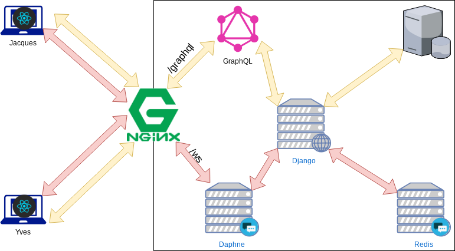

Sergiy Goloviatinski, Etienne Hüsler & Bastien Wermeille
10 Avril 2019
Sommaire
- Projet
- Buts
- Démonstration
- GraphQl
- Django Channels
- React
- Redux
Le projet
Création d’un chat, inspiré de Discord
Buts
Apprendre de nouvelles technologies
- Django
- Django channels
- GraphQL
- React
- Redux
- JWT
Démonstration
GraphQl

Django Channels (1)

Django Channels (2)
- Authentification en passant JWT par cookie à la connexion WS
- Un “consumer” côté backend par utilisateur connecté
- tous les consumers dans le même “groupe”, mais filtrage côté backend avant d’envoyer au client
- Message inséré dans DB avec GraphQL, ensuite envoyé par WS
- WS pour mettre à jour GUI
- WS pour notifications avec toastr
React (1)
- Bibliothèque Javascript libre
- Developpée par Facebook et une communauté de développeurs indépendants
- Faciliter la création d’applications web monopage
- Composants générant une partie ou la totalité d’une page web
- Utilisée par Netflix, WhatsApp, Yahoo …
- Vue du modèle MVC
React (2)
React (3)
React (4)
Redux
TODO:
Conclusion
- Fonctionnel
- Difficulté principale: jongler avec/intégrer pleins de nouvelles technos
- Pas pu implémenter tout ce qui était prévu par manque de temps
Améliorations
- Effacer messages/channels/serveur/amis
- Interface mobile
- Gestion et mise en place des droits
- Bannir
- Accepter invitation ami
- Notifications avec bulles quand nouveau message sur autre channel/serveur
- Réactions
Questions ?